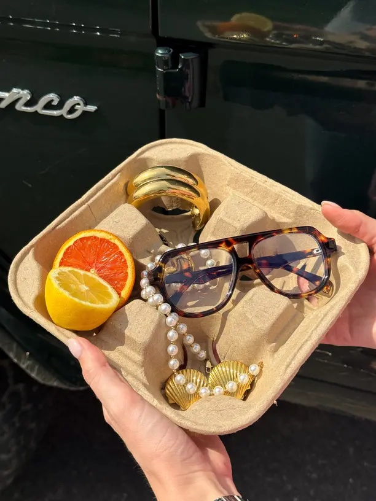

2 Élles EditDossiêModa
Old Money vs. Quiet Luxury: qual a diferença real
Todo mundo trata como sinônimo. Não são a mesma coisa — e a diferença explica por que uma tendência dura e a outra é só estética.

Os dois termos viraram praticamente intercambiáveis nas redes: blazer bege, mocassim, cashmere sem logo — "old money" ou "quiet luxury", tanto faz. Só que a origem e a lógica por trás de cada um são bem diferentes, e entender isso evita confundir estética com classe social real.
Old money é sobre origem, não sobre roupa
"Old money" descreve literalmente dinheiro antigo — famílias com riqueza herdada há gerações, normalmente ligada a WASP (White Anglo-Saxon Protestant) americano ou aristocracia europeia. O guarda-roupa associado a isso (blazer, pérolas, tweed, tudo levemente surrado de propósito) é consequência da cultura, não o objetivo dela. Quem nasce old money não está tentando parecer discreto — a roupa gasta e sem estampa reflete o fato de que a família nunca precisou provar riqueza pra ninguém.
Quiet luxury é uma estratégia de mercado
Quiet luxury nasceu como reação: depois de anos de logomania (Y2K, hypebeast, tudo estampado), marcas e consumidores viraram a chave pro oposto — discrição como novo status. Mas diferente do old money, quiet luxury é comprável. Você pode gastar uma fortuna em uma peça sem logo visível hoje, mesmo vindo de dinheiro novo, mesmo tendo ganho a grana há dois anos. É uma escolha estética e comercial, não um traço de família.
Marcas perceberam isso rápido: The Row, Loro Piana e Brunello Cucinelli venderam a ideia de discrição como o novo luxo aspiracional, e o preço subiu proporcionalmente à falta de logo — o oposto exato da lógica que dominou os anos 2000.
Por que a confusão é tão comum
Visualmente, as duas coisas realmente se parecem: cores neutras, tecidos nobres, corte clássico. A diferença está na intenção. Old money nunca foi pensado como tendência — é um estilo de vida que sempre existiu, só virou conteúdo agora. Quiet luxury é, por definição, uma tendência: tem início, tem pico, e (como toda tendência) vai ter fim. Saber diferenciar os dois ajuda a entender por que uma "estética" dura décadas e a outra é ciclo de moda.
Produzido com ajuda de Inteligência Artificial.